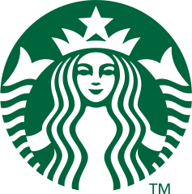

사례 01 · 비용 폭증 · 2026.06

엔지니어들이 클로드 코드를 쓸수록 청구서도 불었습니다. 반년 만에 사용률 32%→84%, 1인당 월 500~2,000달러. 1년 예산이 4개월 만에 바닥났고 월 1,500달러 상한이 걸렸습니다. COO는 이 지출이 성과로 이어졌는지를 두고 "아직 그 연결고리는 없다"고 했습니다.
비용 절감 기대VS4개월에 1년치 소진

짐 반데헤이 대표는 1년간 스스로 'AI 실험용 쥐'를 자처하며 매일 새벽 1~2시간씩 직접 썼습니다. 의료 기록·혈액 검사·식단·운동 데이터까지 자신에 관한 거의 모든 것을 넣었습니다.
"내 생각을 대신하지 마라. 내 생각에 맞서고, 날을 세워 달라. 비위 맞추지 말고, 듣기 좋은 말도 하지 마라. 나는 위안이 아니라 정보를 원한다."
짐 반데헤이 대표가 자신의 AI에 새긴 첫 지시출처. Axios "Confessions of an AI lab rat"(2026.06.08).
대부분은 한두 번 써보고 "별것 없다"며 떠납니다. 반데헤이 대표는 하루 30분이라도 2~3주 동안 한 가지 일에 꾸준히 붙어 보라고 권합니다. 차이는 바로 그 지점에서 갈립니다.
개인 차원에서는 속도가 붙지만, 접근 권한과 데이터, 보안과 규제라는 현실의 벽이 조직 차원에서 진척을 가로막습니다.
1년 전만 해도 비용 절감과 생산성, 이익을 기대하며 인력을 줄였습니다. 그러나 최근 석 달 사이 판단이 바뀌었습니다. 전에는 불가능했던 새 수익 사업 세 가지를 찾아냈고, 이제는 오히려 사람을 더 뽑겠다고 말합니다.
엔지니어들이 클로드 코드를 쓸수록 청구서도 불었습니다. 반년 만에 사용률 32%→84%, 1인당 월 500~2,000달러. 1년 예산이 4개월 만에 바닥났고 월 1,500달러 상한이 걸렸습니다. COO는 이 지출이 성과로 이어졌는지를 두고 "아직 그 연결고리는 없다"고 했습니다.

약 5,000명에게 6개월간 클로드 코드를 열어줬습니다. 1인당 월 500~2,000달러, 사용률 4월 84~95%. 발목을 잡은 건 성능이 아니라 청구서였습니다. 회계연도가 끝나는 6월 30일에 맞춰 대부분 회수하고 깃허브 코파일럿 CLI로 환경을 바꿨습니다.

재고 도구 'Automated Counting'을 북미 1만 1,000여 개 매장에 깔았습니다. 카메라·라이다로 '99% 정확도'를 내세웠지만, 우유 종류를 헷갈려 직원이 매번 다시 세야 했습니다. 시간을 아껴야 할 도구가 일손을 늘렸고, 9개월 만에 전 매장에서 접었습니다.
출처. Fortune·TechCrunch(우버), Windows Central(MS), Reuters·CNBC·Fortune(스타벅스).